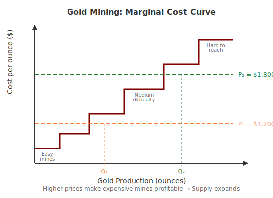

Economics for Everyone
Markets are one of the most powerful institutions humans have ever created.
Today we’ll explore:
Gains from trade: The benefits buyers and sellers get from exchange
Comparative advantage: The returns to focusing on what you’re relatively better at
Markets as surplus maximizers: Under ideal conditions, markets deliver maximum total benefits
Market failures: Forces that prevent markets from achieving their potential
A classroom experiment
I’m going to allocate half the class one point of extra credit.
You will be the sellers in this market.
The other half of the class will be the buyers.
If you are a seller:
Report the lowest price (in dollars) at which you would give up your extra credit point.
If you are a buyer:
Report the highest price (in dollars) at which you would buy an extra credit point.
Take a moment to reflect. What is that point really worth to you?
[Poll link: pollev.com/e4e]
Why markets maximize benefits
Consider a market for a single good (say, toasters).
Sellers each have a willingness to accept (WTA)
The smallest amount they’d take to part with the good
Buyers each have a willingness to pay (WTP)
The highest amount they’d pay to acquire the good
When a buyer pays less than their WTP:
They get consumer surplus = WTP - Price
When a seller receives more than their WTA:
They get producer surplus = Price - WTA
Total surplus = Consumer surplus + Producer surplus
At the equilibrium price \(p\):
The only remaining sellers want more than \(p\).
The only remaining buyers will pay less than \(p\).
No more gains from trade exist!
Under certain conditions, competitive markets automatically maximize total surplus.
This is remarkable. No central planner needed.
Just people pursuing their own interests, guided by prices.
Adam Smith called this the “invisible hand.”
Here’s something remarkable about the equilibrium price:
For sellers: The price reflects the marginal cost of production
The cost of producing one more unit
For buyers: The price reflects the marginal benefit of consumption
The value of consuming one more unit
At equilibrium: Marginal cost = Marginal benefit = Price
The price tells producers: “This is what society values an extra unit at.”
The price tells consumers: “This is what it costs society to make an extra unit.”
Prices coordinate decisions across millions of people who will never meet.
No one needs to know the whole picture. The price contains the information.
The discovery process
Real markets are messy. Prices don’t appear by magic.
If price is too high: Excess supply
If price is too low: Excess demand
Market pressures push toward equilibrium.
Retail inventory management
Auctions
Entry and exit
You might think: supply and demand determine price.
But in practice, prices are discovered through experimentation.
In this sense: prices determine supply and demand.
Prices are signals that coordinate behavior.
What determines how much gold gets mined?

When demand for gold increases:
The price signal coordinated this response—no central planner required.
Why we don’t all make our own shoes
Prices don’t just coordinate within a market.
They coordinate across markets.
This unlocks the gains from specialization and comparative advantage.
Meet Alex and Jordan. They’re working on a group project that requires:
Here’s how long each task takes them:
| Task | Alex | Jordan |
|---|---|---|
| Write report | 10 hours | 5 hours |
| Build website | 2 hours | 4 hours |
Absolute advantage: Who can do the task faster?
Seems obvious: Jordan writes, Alex codes.
But what if there were two reports and two websites?
Without specialization (each does one of each):
| Alex | Jordan | Total | |
|---|---|---|---|
| Report | 10 hrs | 5 hrs | |
| Website | 2 hrs | 4 hrs | |
| Total | 12 hrs | 9 hrs | 21 hrs |
What if Alex does both websites and Jordan does both reports?
| Alex | Jordan | Total | |
|---|---|---|---|
| Reports | 0 | 10 hrs | |
| Websites | 4 hrs | 0 | |
| Total | 4 hrs | 10 hrs | 14 hrs |
7 hours saved! Same output, less total work.
New example: Sam and Taylor face a deadline.
They need 2 reports and 2 websites done by 5pm. It’s now 11am.
| Task | Sam | Taylor |
|---|---|---|
| Write report | 2 hours | 4 hours |
| Build website | 1 hour | 2 hours |
Sam is faster at both tasks!
If Sam does everything alone:
But what if they only have 4 hours until deadline?
Sam alone can’t finish. They need to work in parallel.
Option A: Each does 1 report + 1 website
Who has lower opportunity cost for each task?
Same ratio! But Sam is 2x faster at both. So have Sam do more total work:
Option B: Sam does 2 websites + 1 report, Taylor does 1 report
By working in parallel and having the faster person do more, they meet the deadline.
Comparative advantage matters when there are constraints—time, capacity, or resources.
In the real world, no person or country can do everything.
This is why countries trade. This is why you hire specialists.
In our examples, we calculated opportunity costs.
In real life, nobody does this math. So how does it work?
Prices tell you.
In real life, no one calculates opportunity costs.
Instead, prices tell you what to do.
If coding pays $75/hr and writing pays $25/hr:
But then:
Prices adjust until someone finds it worthwhile to write.
Relative prices guide each person to their comparative advantage—automatically.
No one needs to know everyone’s abilities.
Prices contain the information needed to coordinate specialization across millions of people.
The fine print on that welfare theorem
The First Welfare Theorem says markets maximize surplus…
…under certain conditions.
When these conditions fail, we get market failures.
Let’s explore the three most important ones.
When some know more than others
Imagine you’re buying a used car.
The seller knows which type they have. You don’t.
You’re willing to pay the average value.
But sellers of good cars won’t accept that—it’s below their car’s worth.
So good cars exit the market.
Only lemons remain!
Adverse selection: The market unravels because of information asymmetry.
Let’s revisit our extra credit market.
Sellers: I’m going to randomly assign you to real or fake credits.
Check your email/phone now—I’ve sent half of you a message saying “REAL” and half “FAKE.”
(If you didn’t get a message, your credit is FAKE.)
Sellers: You know if your credit is real (worth 1 point) or fake (worth 0).
Buyers: You don’t know which sellers have real credits.
Sellers: What’s your WTA now?
Buyers: What’s your WTP now?
Submit your answers!
How do markets cope with information problems?
When your choices affect others
An externality is a cost or benefit that affects someone not involved in the transaction.
Negative externality: Your action harms others
Factory pollution, secondhand smoke, loud music
Positive externality: Your action helps others
Vaccinations, education, beautiful gardens
When you buy gas, you pay for:
You don’t pay for:
The market price is “wrong”—it doesn’t reflect the true social cost.
With negative externalities:
Pollution is the classic example. The market “fails” because prices don’t include all costs.
Back to our credit market.
New rule: Each credit point sold reduces the value of ALL other credits by 5%.
If 5 trades happen, every credit (traded or not) is worth only 75% of a point.
This is like a curve: the more points out there, the less each one helps your grade.
You’re a buyer. You still want a credit point.
But when you buy one, you make everyone else’s credits less valuable.
Do you consider that cost when deciding to trade?
Should that cost affect whether the trade happens?
When someone controls the market
The welfare theorem assumes price-taking behavior:
No individual buyer or seller can affect the market price.
But what if one seller controls most of the supply?
A monopolist can set the price.
They’ll charge more than the competitive price.
Result:
New game structure:
I’ll sell all the credits to one student at the earlier market price.
That student becomes the monopolist and sells to everyone else.
Monopolist: What price will you charge?
What can be done?
When markets fail, government intervention can help:
Information problems:
Externalities:
Market power:
But government intervention has its own costs and can fail too. More on this later in the course.
Sometimes private bargaining can solve externalities.
Coase’s insight: If property rights are clear and transaction costs are low, people negotiate to the efficient outcome.
Factory pollutes, harms nearby residents.
Either way, they negotiate to the efficient level of pollution!
Works well:
Doesn’t work:
A market is a wonderful thing.
Thinking like an economist means:
Equity vs. Efficiency